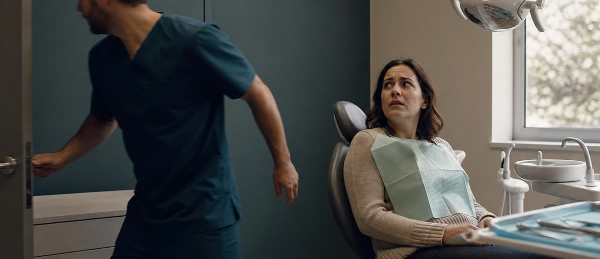
Cómo explicar un presupuesto dental antes de hablar de precio
El paciente no regatea igual cuando entiende el tratamiento antes de escuchar la cifra.
Leer artículo →
La primera cita dental empieza en el móvil, no en la recepción
Muchas clínicas pierden primeras citas antes de que recepción se entere.
Leer artículo →
El presupuesto dental no se pierde por precio: se pierde por seguimiento
Muchas clínicas pierden presupuestos aceptados porque nadie vuelve a llamar a tiempo.
Leer artículo →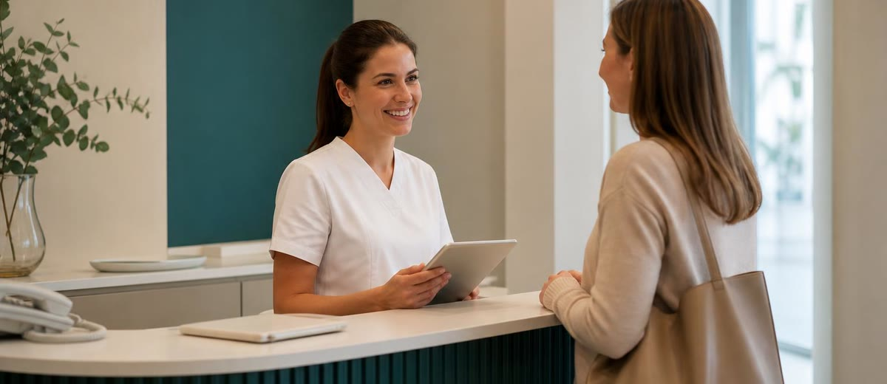
El paciente no vuelve solo por el doctor: vuelve por cómo le trata la clínica
La experiencia del paciente no vive solo en el sillón: empieza en la llamada, sigue en recepción y se confirma en el seguimiento.
Leer artículo →
6.000 implantes al día: el problema no es conseguirlos, es completarlos
España coloca dos millones de implantes al año. El reto real no es captar al paciente: es no perderlo entre la primera visita y la última.
Leer artículo →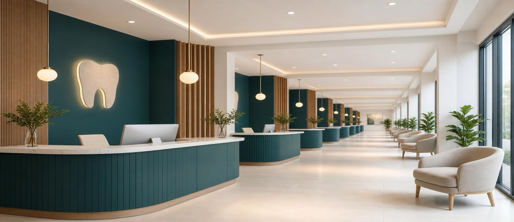
Las cadenas dentales también tienen su propio oligopolio
5 operadores se llevan la mitad del negocio de cadenas. El enemigo no es uniforme, y eso cambia cómo debes posicionarte.
Leer artículo →Antes de gastar más en publicidad, tapa el agujero de tu recepción
Hay clínicas que gastan 1.500 euros al mes en Google Ads y pierden el 60% de las llamadas. El problema no es el anuncio.
Leer artículo →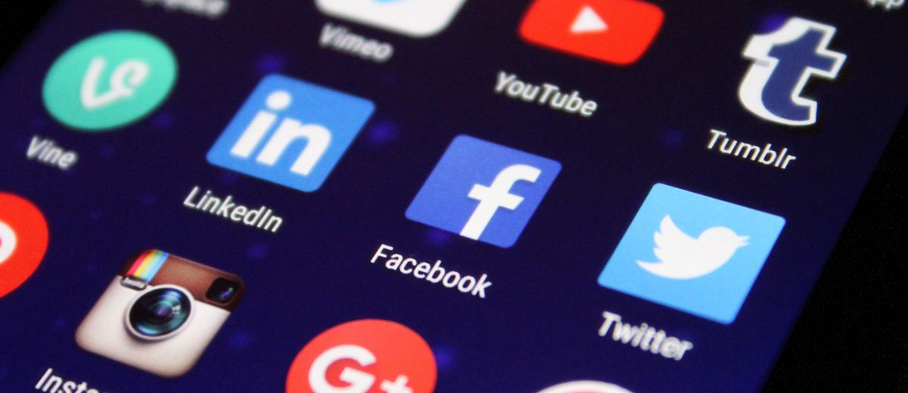
El 79% de tus pacientes ya ha buscado en Google antes de llamarte. ¿Qué encuentran?
El 79% consulta online antes de ir a la clínica. Solo el 3% de las clínicas tiene estrategia. Aquí está la diferencia que cierra citas.
Leer artículo →
La pregunta que duplica la agenda sin cambiar el anuncio
Una sola pregunta al cierre de llamada subió la conversión del 40 al 72%. Sin tocar el marketing.
Leer artículo →El guion que duplicó la agenda sin tocar un solo anuncio
Una pregunta de cierre puede doblar la tasa de conversión de llamadas a citas en una clínica dental.
Leer artículo →Caries infantil en España: 25 años sin mejorar (y lo que eso significa para tu clínica)
Un tercio de los niños de 5 años tiene caries en dientes de leche. El mismo dato que en el año 2000. Qué hacer con eso si diriges una clínica dental.
Leer artículo →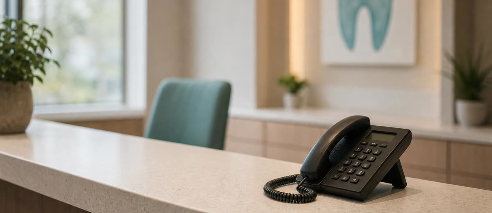
La métrica más barata de arreglar en una clínica dental: llamadas perdidas
Antes de invertir más en captación dental, mide cuántas llamadas no atiende tu clínica.
Leer artículo →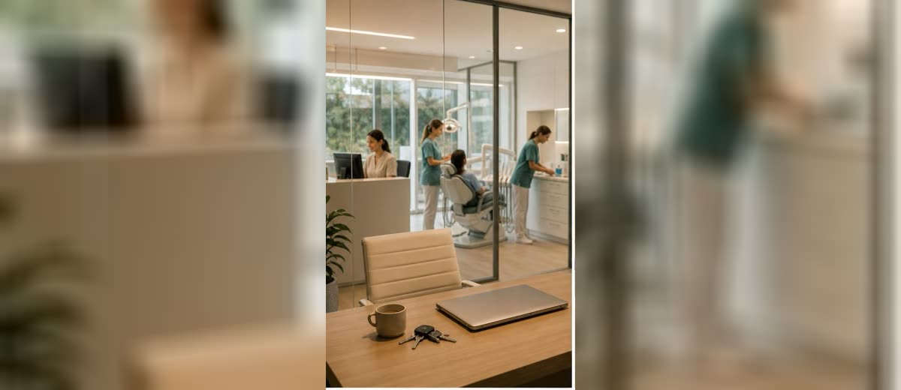
Cuando tu clínica dental funciona sin ti, empieza la gestión de verdad
Una clínica dental empieza a ser empresa cuando deja de depender del dueño para cada pequeña decisión.
Leer artículo →La sanidad pública llega al dentista: menos de un euro por persona mayor de 65
El Estado entra en la odontología pública para mayores de 65 con 7 millones de euros para diez millones de personas. Qué cambia para tu clínica y qué oportunidad esconde esta noticia.
Leer artículo →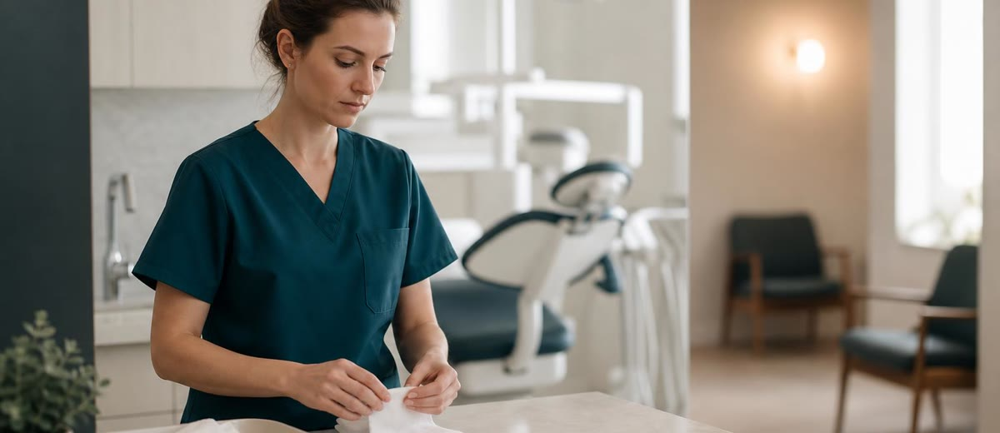
Reactivar pacientes sin spam: cómo acordarte antes que la competencia
Mandar un WhatsApp masivo a tus pacientes dormidos no es reactivación: es spam con nombre de pila. Así se hace bien.
Leer artículo →
Caries sin tratar: la mayor bolsa de trabajo de tu clínica dental no está en la calle
El 94 % de los adultos tiene caries. El 40 % no las ha tratado. La mayor bolsa de trabajo no está por captar: está por activar.
Leer artículo →La base de datos de tu clínica dental no es un archivo: es una agenda futura
La base de datos de una clínica dental puede llenar agenda si se usa para decidir, no solo para guardar nombres y teléfonos.
Leer artículo →Tu ficha de Google es la recepción digital de tu clínica dental
La ficha de Google de una clínica dental no es solo un escaparate: responde dudas, genera confianza y decide citas antes de que suene el teléfono.
Leer artículo →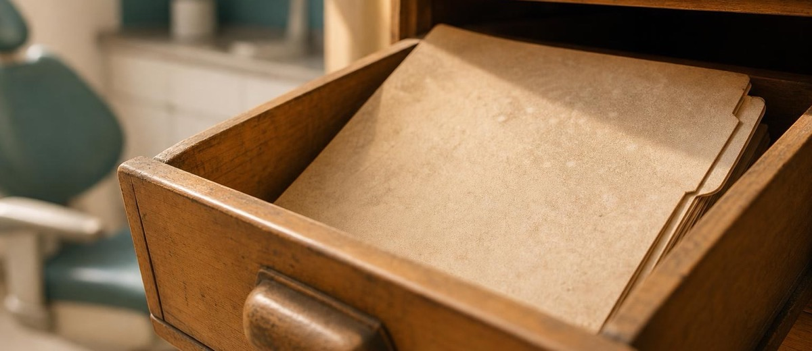
Pacientes dormidos en la base de datos: la agenda que ya habías pagado
Una clínica dental puede tener cientos de pacientes inactivos sin saberlo: fichas, presupuestos y revisiones que nadie volvió a mover.
Leer artículo →La falsa libertad del dueño de una clínica dental
Tener una clínica propia no siempre da más libertad si el negocio sigue dependiendo de una sola persona.
Leer artículo →Donde se va el dinero de una clínica dental
Una clínica dental puede facturar mucho y dejar poco beneficio si no mide las fugas de agenda, equipo, seguimiento y costes invisibles.
Leer artículo →La clínica independiente que gana: no es precio, es sistema
Las aseguradoras ganan por volumen. La clínica independiente solo puede ganar con gestión real: recepción, agenda, seguimiento y pacientes reactivados.
Leer artículo →Cómo diferenciar tu clínica dental de las franquicias (cuando no puedes competir en precio)
Las cadenas ya tienen el 18,6 % del mercado y crecen. La clínica independiente no puede ganar en precio, pero sí en relación y gestión fina.
Leer artículo →Aseguradoras y clínica dental: cómo ganarte al paciente que llega con un precio en la cabeza
Cuando el paciente entra por un cuadro concertado, el precio ya lo ha fijado otro. Te explicamos cómo ganar ese terreno.
Leer artículo →Lo que no mides en tu clínica dental se escapa por la puerta
Nadie sabe cuántas clínicas dentales hay en España. Cuatro cifras distintas, ningún acuerdo. Pero tú sí puedes saber qué ocurre dentro de la tuya.
Leer artículo →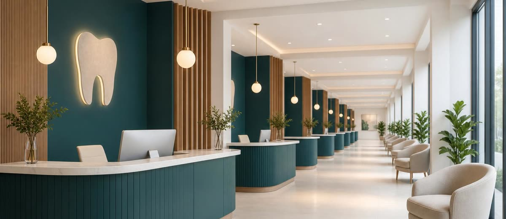
La aseguradora que controla tu canal (y lo que puedes hacer al respecto)
Las aseguradoras ya no solo mandan pacientes: fijan precios, aprenden tu negocio y abren sus propias clínicas. Qué puede hacer una clínica independiente para no perder el control del canal.
Leer artículo →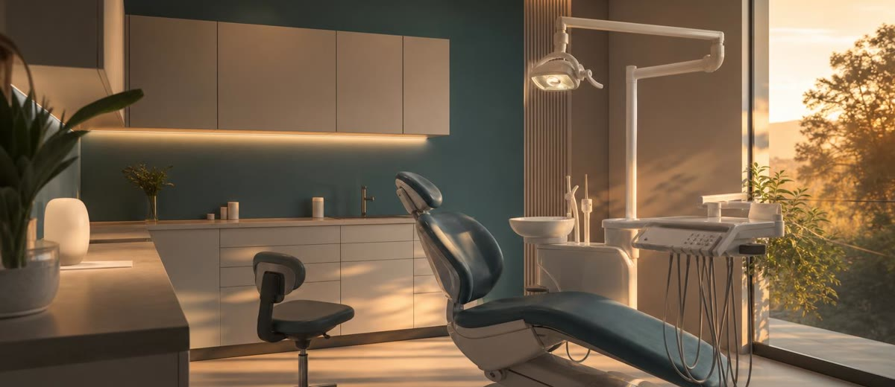
La clínica de enfrente: por qué obsesionarte con la competencia te frena
Mirar a la competencia es tentador. Pero cada hora que pasas contando sus pacientes es una hora que no dedicas a los tuyos.
Leer artículo →Más reseñas en Google no llenan tu agenda (lo que importa de verdad en tu ficha)
La clínica con más reseñas de España no aparece entre las 30 primeras en Maps. Esto es lo que de verdad cuenta en tu ficha de Google.
Leer artículo →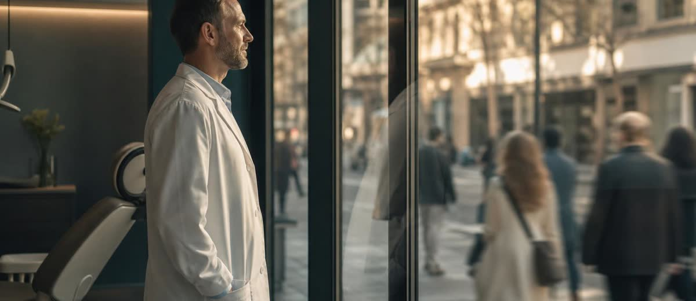
La web de tu clínica tiene una fuga de pacientes que pusiste tú
Los iconos de redes sociales en tu web son puertas de salida para el paciente que está a punto de pedir cita.
Leer artículo →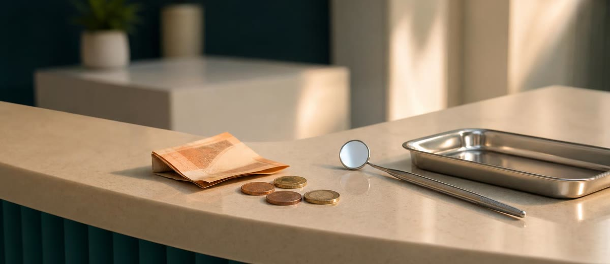
Un paciente de Madrid gasta el doble en el dentista que uno de Valencia. ¿Y el tuyo?
El INE lo mide año a año: el gasto dental varía hasta el doble según la provincia. Lo que esto significa para la estrategia de precios de tu clínica.
Leer artículo →Web de clínica dental: menos botones, más citas
Una web de clínica dental convierte mejor cuando guía al paciente hacia la cita y elimina salidas que distraen justo antes de decidir.
Leer artículo →Reactivar pacientes dormidos en una clínica dental: el crecimiento que ya pagaste
Reactivar pacientes dormidos suele ser más rentable que captar desconocidos, pero exige orden, criterio y seguimiento.
Leer artículo →El margen real de una clínica dental: entre el 8% y el 18% (y lo que lo decide)
Dos clínicas en la misma calle, los mismos precios, los mismos pacientes. Una se queda el 8% de lo que entra. La otra, el 18%. La diferencia no está donde crees.
Leer artículo →
Explicar el tratamiento dental antes del presupuesto aumenta la conversión
El paciente acepta mejor un presupuesto dental cuando entiende el problema, la consecuencia y el valor antes de ver la cifra.
Leer artículo →
No-show en clínica dental: cómo proteger una agenda que ya estaba vendida
El no-show en una clínica dental no es una molestia menor: es facturación perdida, equipo parado y una señal de sistema.
Leer artículo →
Tres errores en la primera visita que frenan la conversión dental
La primera visita puede perder presupuestos por prisa, lenguaje técnico y precio mal presentado, incluso cuando el diagnóstico es correcto.
Leer artículo →
Turismo dental: cómo competir cuando el paciente compara con Budapest
El turismo dental no se combate bajando precios: se combate explicando valor, garantía y seguimiento antes de perder el presupuesto.
Leer artículo →
La primera visita en una clínica dental empieza antes del sillón
La primera visita decide confianza, conversión y presupuesto antes de que el paciente llegue al sillón.
Leer artículo →
Agenda llena no significa clínica dental rentable
Una clínica dental puede tener la agenda llena y aun así perder rentabilidad. Antes de pedir más pacientes, conviene mirar mejor.
Leer artículo →
Las llamadas perdidas en recepción también son marketing dental
Una clínica dental puede perder pacientes antes de conocerlos. La recepción convierte o enfría cada oportunidad que entra.
Leer artículo →
Por qué el marketing dental parece caro cuando no tienes sistema
El marketing dental no suele fallar solo por la campaña. Falla cuando la clínica no mide llamadas, citas, presupuestos y seguimiento.
Leer artículo →
Clínica dental independiente vs cadenas: lo que cambia antes de 2030
8 de cada 10 clínicas son independientes. Pero antes de 2030, las cadenas podrían llevarse el 60% de la facturación del sector.
Leer artículo →
El boca a boca no tiene agenda: cómo convertir recomendaciones en crecimiento
El boca a boca sigue siendo oro para una clínica dental, pero no basta con esperarlo: hay que cuidarlo, medirlo y activarlo.
Leer artículo →
Digitalizar tu clínica dental no es comprar pantallas: es dejar de gobernar a ojo
El 83% de las clínicas dentales sigue gestionando a ojo. Aquí tienes qué medir para pasar del 15% al 30% de rentabilidad.
Leer artículo →
Hacer bien la odontología no basta: el paciente tiene que percibirlo
Una clínica dental puede trabajar muy bien y aun así no llenar la agenda si el paciente no percibe valor y confianza antes del sillón.
Leer artículo →
Por qué el equipo de recepción puede valer más que el mejor equipamiento dental
La fidelización no empieza en el sillón: empieza en cómo reciben, llaman, recuerdan y cuidan a tus pacientes.
Leer artículo →
El paciente de estética dental no compra tratamientos: compra confianza
El paciente que llega por estética compara, duda y elige con calma. Si tu clínica le habla con prisa, lo pierde antes del presupuesto.
Leer artículo →
Cómo presentar presupuestos altos sin que el paciente se vaya
El «me lo pienso» rara vez es por dinero. Cómo presentarlo con claridad y empatía para que digan sí.
Leer artículo →
Cómo diferenciar tu clínica de estética (sin bajar precios)
Si el paciente no ve diferencia contigo, elige por precio. Cómo construir una marca que te haga inconfundible.
Leer artículo →
WhatsApp para tu clínica dental: más citas y menos ausencias
Recordatorios, reactivación y seguimiento por el canal que la gente sí lee. Menos huecos vacíos.
Leer artículo →
Publicidad en Instagram y Meta para clínicas de estética: por dónde empezar
Objetivo, presupuesto pequeño y una métrica. Cómo empezar en Meta sin tirar el dinero.
Leer artículo →
De la llamada a la primera cita: por qué tu recepción vende más que tu web
La mitad de tu marketing se decide en el teléfono. Cómo convertir llamadas en primeras visitas.
Leer artículo →
Cómo fidelizar al paciente de estética para que vuelva cada temporada
Captar cuesta caro; que vuelva, casi nada. Seguimiento y recordatorios para que regrese.
Leer artículo →
Marketing de implantes dentales: atrae al paciente que valora la calidad
Deja de vender el tornillo y vende la vida que devuelve. Así atraes a quien no elige solo por precio.
Leer artículo →
Fotos de antes y después: cómo usarlas en redes sin líos legales
La prueba más potente y la más delicada. Muestra resultados sin saltarte la normativa ni los datos.
Leer artículo →
Cómo conseguir reseñas de 5 estrellas en Google (sin perseguir a nadie)
Un método sencillo para que los pacientes contentos te valoren y para responder a las críticas con calma.
Leer artículo →
Cómo llenar la agenda de tu clínica estética sin parecer «low cost»
Bajar precios atrae al paciente equivocado. Cómo llenar la agenda con criterio, confianza y valor.
Leer artículo →
7 formas de captar pacientes para tu clínica dental (sin bajar precios)
Siete palancas de marketing que atraen pacientes de calidad sin entrar en la guerra de precios.
Leer artículo →
Instagram para medicina estética: la guía que sí cumple la normativa
Muestra resultados y genera confianza sin arriesgar tu licencia con el antes/después.
Leer artículo →